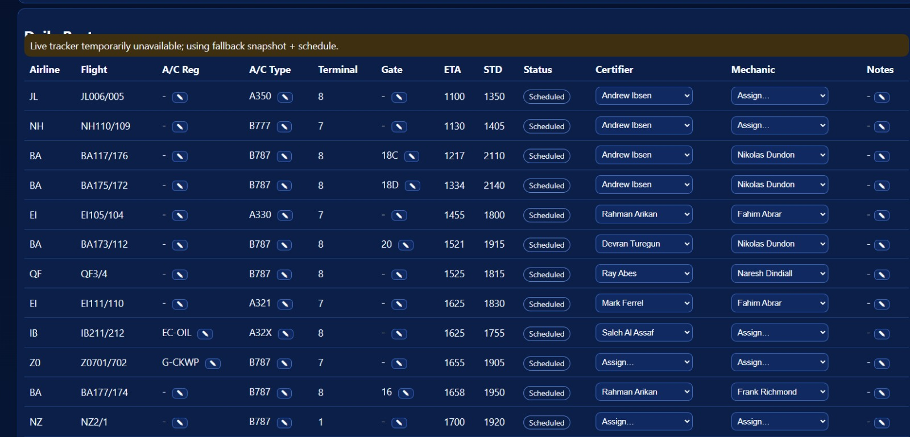

Line Maintenance Operational Dashboard
Live app: https://jfk-ops-live-dashboard-vercel-mirro.vercel.app/
Overview
The Line Maintenance Operational Dashboard is a low-code, highly tailorable web app designed to support daily line maintenance execution,
resource allocation, and shift-level decision making. It gives engineers and managers one live operational view that combines daily roster context,
live flight activity, weather visibility, and assignment control.
What it does
- Daily Roster CSV Upload: imports station activity and creates a practical operational board for the day.
- Interpretative ingestion logic: intelligently parses roster content and proposes assignment mappings, improving compatibility across different roster formats.
- Real-time dashboard access: engineers can view the operational picture on the go (flight rows, status, gate, reg/type where available).
- Live weather panel: station weather now/AM/PM/EVE with precipitation to support tactical planning.
- Resource assignment layer: certifier/mechanic assignment controls with quick edit and reset behaviors for fast replanning.
- Gantt operations view: managers can see the day timeline, overlapping workload, and peak periods at a glance.
- Heat-map style demand insight: highlights busy intervals to support staffing and shift pacing decisions.
Enrichment & resilience layers
- Flight enrichment stack designed with fallback behavior (provider + cache + manual overrides).
- A/C registration and type population can be sourced from live/enrichment layers where available.
- DOC8643 type normalization support helps standardize aircraft type values into cleaner outputs.
- Manual column edits remain available for operational control when feeds are incomplete.
Why this is valuable
- Resource management: aligns people, flights, and constraints in one execution surface.
- Faster decisions: combines planning data and live cues into a single operational picture.
- Station versatility: adaptable by station and process maturity without expensive enterprise customization.
- Low-cost deployment: built as a practical low-code web application with minimal overhead.
Screenshots

Figure 1: Daily roster board with assignment columns, live statuses, and editable operational controls.

Figure 2: Live ops context showing weather module, feed health, and roster execution status.